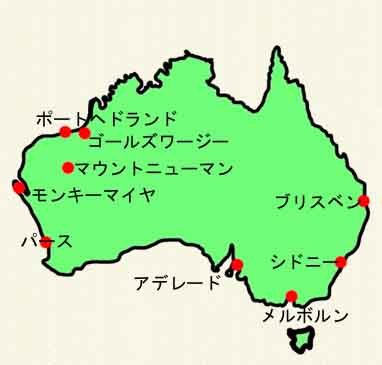
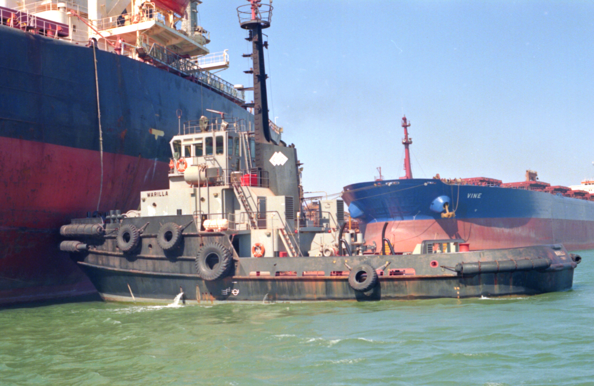

 オーストラリア、ポートヘドランドでの私の仕事は、日本の某社向け鉄鉱石の積み込み立ち会いで、積み始める前と 後での検定立ち会いと、積み込み中の品質確認であった。１船で大体２０万トンを積み込む、１時間当たりの積み込 み量は３千〜７千トンであり、平均で６千トン位である。積み終えるのに大凡３３時間位かかる。品質によってこの時間が早くなったり、設備トラブルがあると遅くなったりする。積み込み終了が日中なら、立ち会 っていられるから問題がない、問題は積み込み終了が深夜１１時から朝方６時の時である。 ある日いつものように積み込みをしていた。多少手間どって延び延びになり終了は深夜３時頃になりそうであるので、 一度帰宅し食事をしていた。１２時頃に電話をして何時頃終わるか確認した、朝８時になりそうであると担当者は教 えてくれた。その時に残り積み込み量とその時の積み込み速度を教えてくれて８時と算出してくれた。私もその数字 を使って同じく８時頃になることを確認した。  翌朝は安全を期して６時前に岸壁に付いた、景色が一望に見えて水平線がよく見渡せられる。何も遮る物がない！ 船がいない！！本来私は積み込み終えたら、ドラフト検定といって船がどの位水中に沈んでいるかを確認しなければ ならない。この確認を積み込み前と後ですることで、船に鉄鉱石を何トン積み込んだかを確認するのである。 担当者に聞いたら朝５時に出航したと言ってきた。彼は計算するための量を間違えてしまったのである、その為に計 算より早く積み込み終了したので、船は出ていってしまった。仕方なく、立ち会っていなかったが書類にサインをして、私の仕事を終了した。 ２００１年１０月１２日 記
|